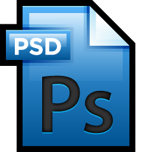

Bonjour, je suis Jéremie Meyer, un jeune web-designer basé dans l'Aisne. Si mon profil vous intéresse, vous pouvez l'étudier plus en détail en cliquant sur le menu.
Compétences
Web dévéloppement
 HTML
HTML
 CSS
CSS
 PHP
PHP
 Java Scipt
Java Scipt
Langues
Anglais Russe Espagnol
Logiciels
Adobe Photoshop
 GIMP
GIMP
 Adobe Illustrator
Adobe Illustrator
Pack File Manager
Word
 Excel
Excel
 Powerpoint
Powerpoint
Formations et diplômes

Formation potentielle chez le Manu, Soissons

Certificat informatique et internet (C2I)2012

Licence d'histoire, Université de Nancy II 2012
Baccaularéat général économique et social2010
Expériences
J'ai eu l'occassion de travailler dans les nombreux secteurs. Notamment:

Web design (stage chez Métaux-détection, Château-Thierry: création d'un site web) juin 2018

Restauration (Buffalo Grill)
Viticole (SARL PMVO; EIRL Préstavigne)

Agricole (SARL Guyon)